Does FLUX follow the change better when the change comes at the end of the prompt? The project’s own test pictures: not published. Drafted by the coding agent (Claude, a closed model by Anthropic). DRAFT until the owner approves it.
FLUX: the change at the end
FLUX.2 [klein] 4B edit only, the base front only, the same seed as the re-test (20261108). The prompt keeps the re-test’s lines but moves the change words out of first place, written as “The change: …”: last (E), or just before the no-words line (S). Spent $0.08 of a $0.20 cap. Notes under each picture are the coding agent’s reading, as corrected by the owner and coordinator.
Not adopted: aging works but Bai's skin lightened; FLUX keeps the change first. A skin-tone test follows after launch.
Variant E’s prompt for the first case
Bai is the person in reference image 1, the main figure.
Unless the change says otherwise: a woman with dark brown skin, tattooed arms and gold earrings.
Unless the change says otherwise: one figure, in a scene that suits the change, not a character sheet.
Keep the face recognisable; change anything else the words describe.
No text, no lettering, no signs with words.
The change: as a medieval knight in armour
“as a medieval knight in armour” · Bai
change: yes · kept: yes · one figurearmour in a hall; black braidsFLUX.2 [klein] 4B · open weights, by Black Forest Labs · before (re-test): the change first
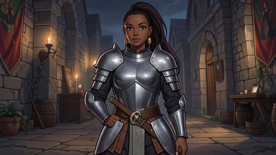
change: yes · kept: yes · one figurearmour in a hall; dark magenta hair, earringsFLUX.2 [klein] 4B · open weights, by Black Forest Labs · E: “The change: …” last, after the no-words line
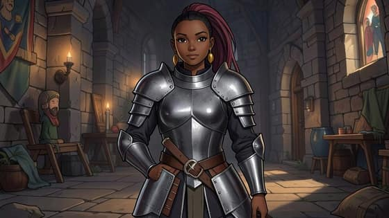
change: yes · kept: yes · one figurearmour in a hall; dark magenta hair, earringsFLUX.2 [klein] 4B · open weights, by Black Forest Labs · S: “The change: …” just before the no-words line
“as a deep-sea diver in a brass helmet, underwater” · Bai
change: partly · kept: yes · one figuremodern scuba, not a brass suitFLUX.2 [klein] 4B · open weights, by Black Forest Labs · before (re-test): the change firstchange: partly · kept: yes · one figurebrass-rimmed helmet, scuba harness; tattoos showFLUX.2 [klein] 4B · open weights, by Black Forest Labs · E: “The change: …” last, after the no-words linechange: partly · kept: yes · one figurethe same as EFLUX.2 [klein] 4B · open weights, by Black Forest Labs · S: “The change: …” just before the no-words line
“much taller, with a heavy, broad-shouldered build” · Bai
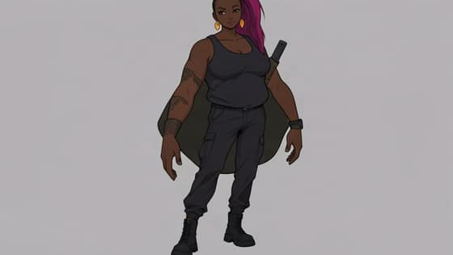
change: no · kept: yes · one figureno bigger; grey blob behind herFLUX.2 [klein] 4B · open weights, by Black Forest Labs · before (re-test): the change first
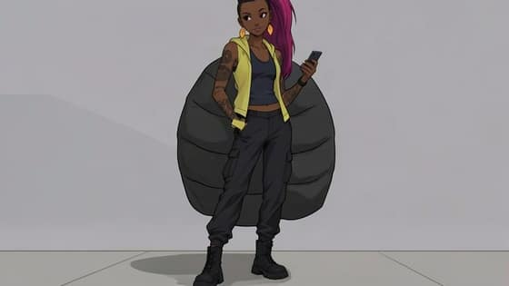
change: no · kept: yes · one figureno bigger; a larger grey blob behind herFLUX.2 [klein] 4B · open weights, by Black Forest Labs · E: “The change: …” last, after the no-words line
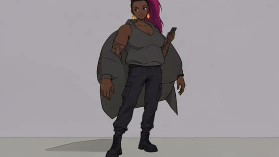
change: no · kept: yes · one figureno bigger; grey blob behind herFLUX.2 [klein] 4B · open weights, by Black Forest Labs · S: “The change: …” just before the no-words line
“aged about 70” · Bai
change: no · kept: yes · one figurenot agedFLUX.2 [klein] 4B · open weights, by Black Forest Labs · before (re-test): the change first
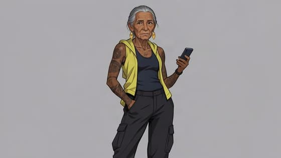
change: yes · kept: no · one figurean old woman: wrinkles, grey hair; but her face is clearly lighter than her own arms and her base: skin lightenedFLUX.2 [klein] 4B · open weights, by Black Forest Labs · E: “The change: …” last, after the no-words line
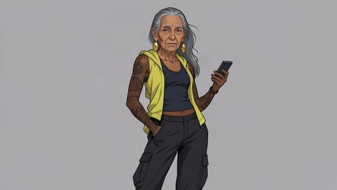
change: yes · kept: no · one figurean old woman with long grey hair; but her face is clearly lighter than her own arms and her base: skin lightenedFLUX.2 [klein] 4B · open weights, by Black Forest Labs · S: “The change: …” just before the no-words line
“shaved head” · Bai
change: yes · kept: yes · one figurebuzzed shortFLUX.2 [klein] 4B · open weights, by Black Forest Labs · before (re-test): the change first
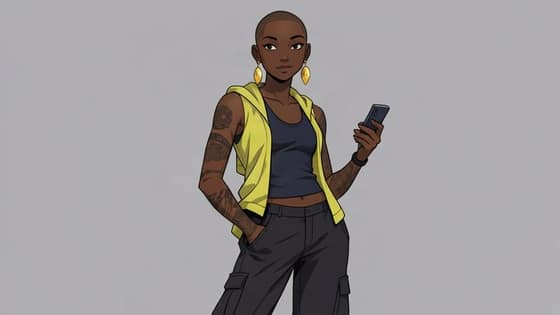
change: yes · kept: yes · one figurefully shavedFLUX.2 [klein] 4B · open weights, by Black Forest Labs · E: “The change: …” last, after the no-words line
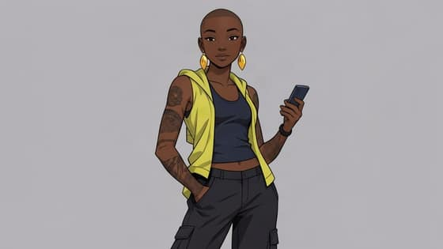
change: yes · kept: yes · one figurefully shavedFLUX.2 [klein] 4B · open weights, by Black Forest Labs · S: “The change: …” just before the no-words line
“aged about 70” · Zei
change: partly · kept: yes · one figuregrey hair, young face; in a roomFLUX.2 [klein] 4B · open weights, by Black Forest Labs · before (re-test): the change first
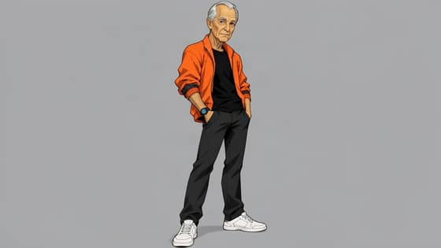
change: yes · kept: yes · one figurean old face with white hair; plain grey background, no sceneFLUX.2 [klein] 4B · open weights, by Black Forest Labs · E: “The change: …” last, after the no-words line
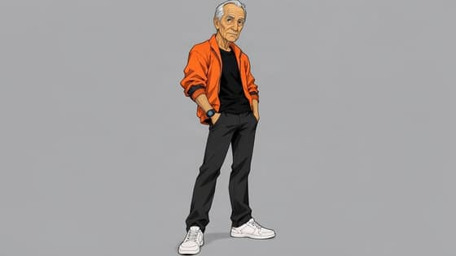
change: yes · kept: yes · one figurethe same as EFLUX.2 [klein] 4B · open weights, by Black Forest Labs · S: “The change: …” just before the no-words line
“shaved head” · Zei
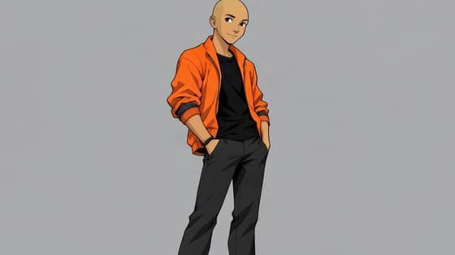
change: yes · kept: yes · one figureshaved; grey backgroundFLUX.2 [klein] 4B · open weights, by Black Forest Labs · before (re-test): the change first
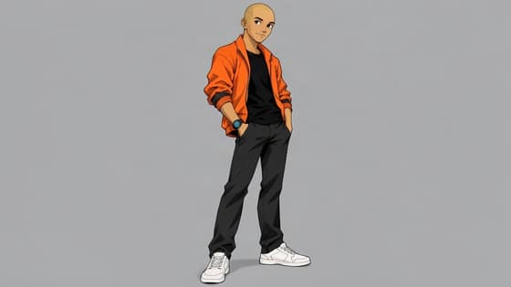
change: yes · kept: yes · one figureshaved; grey backgroundFLUX.2 [klein] 4B · open weights, by Black Forest Labs · E: “The change: …” last, after the no-words line
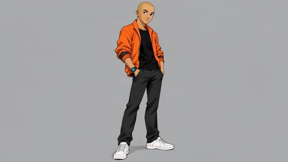
change: yes · kept: yes · one figureshaved; grey backgroundFLUX.2 [klein] 4B · open weights, by Black Forest Labs · S: “The change: …” just before the no-words line
![Bai, as a medieval knight in armour, by FLUX.2 [klein] 4B, before (re-test): the change first. AI-generated test picture.](img/fluxend-R-c08-bai.jpg)
![Bai, shaved head, by FLUX.2 [klein] 4B, before (re-test): the change first. AI-generated test picture.](img/fluxend-R-c07-bai.jpg)